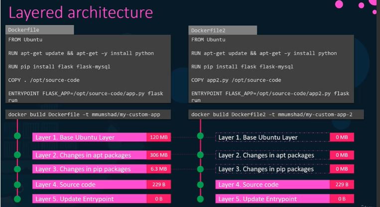
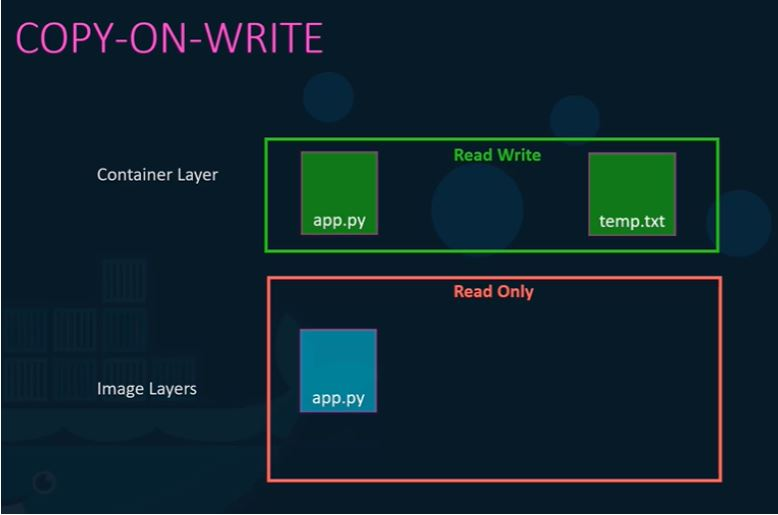
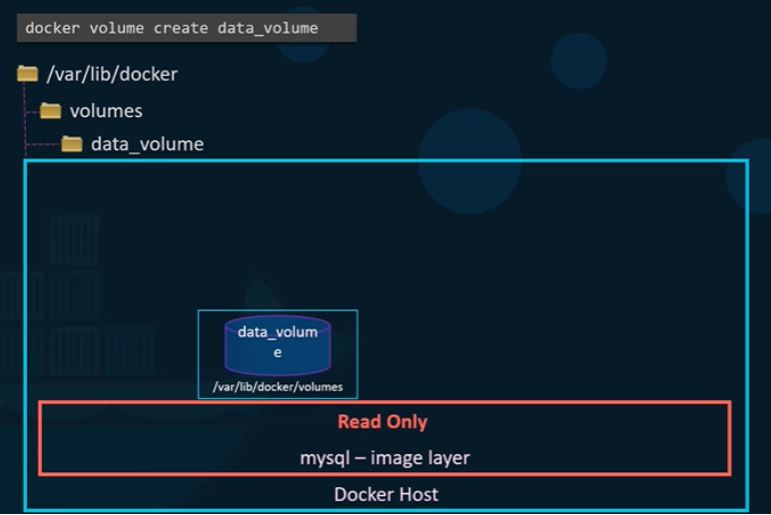
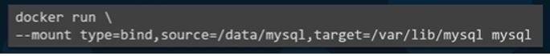
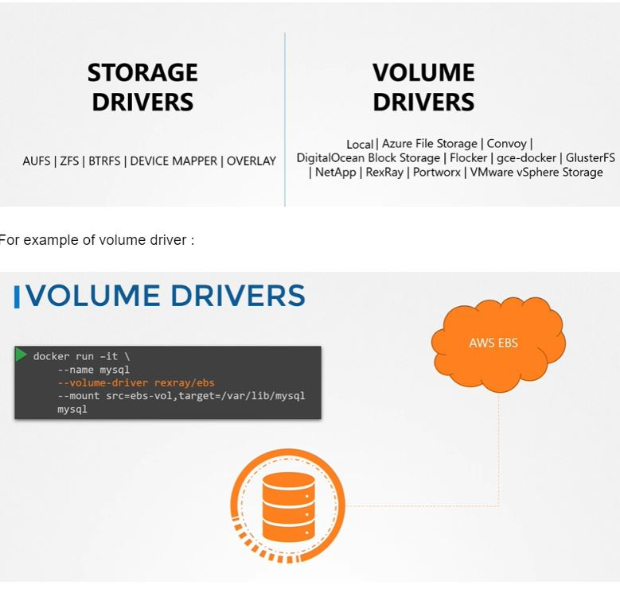
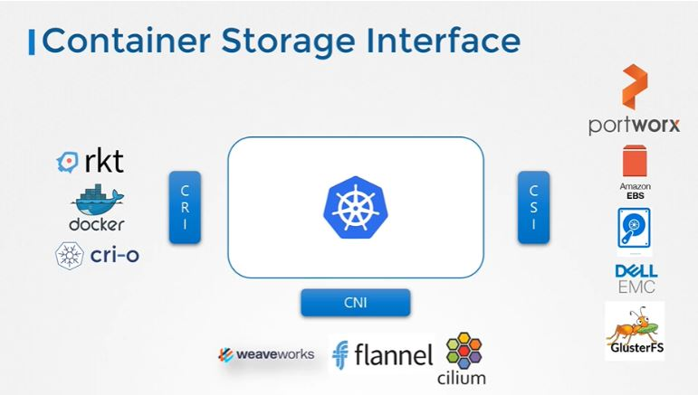

Docker Layered Architecture:
So actually what happens when we create a docker file which acts as image(A Dockerfile is a text document that contains all the commands a user could call on the command line to assemble an image.).
So when we create a container out of it which contains an app.py file.
So now let run another container with difference docker file and let say it few command common like below , then it will be another container will take less time to create because there will be cache available for the common commands.
Now let say i wants to make changes on the py code which comes with docker file image and is in read only format,
So lets say if i want to edit the app.py code , I will be able to edit it but it will not make any changes on the original file but it will create the original and save the changes i will make. This is called COPY ON WRITE.
Now let's say I have created the container and did the customization of the container as per need. But somehow accidentally or deliberately the container got deleted then all changes will be gone because we were not using any external volume to save data.
Docker Volume:
So as we checked above, in order to save the data we need a persistent volume.
In docker data is saved under /var/lib/volumes directory , so we can create the volume.
Then specify the volume details, and create the container by mounting the volume like below
If we run above command like below
It will itself create a volume as it is the default place for docker. It is called VOLUME MOUNTING.
But let say we wants to use/mount an external drive or folder instead of /var/lib/volumes, the we need to specify the whole path like below and it is called BIND MOUNTING
Above command is the old way but now we can write it as below using mount option.
Common storage and volume drivers :
As docker engine provides a container service it is considered in kubernetes as a container runtime interface. Same with network and storage
We use critctl for container details like --> crictl ps same as docker ps